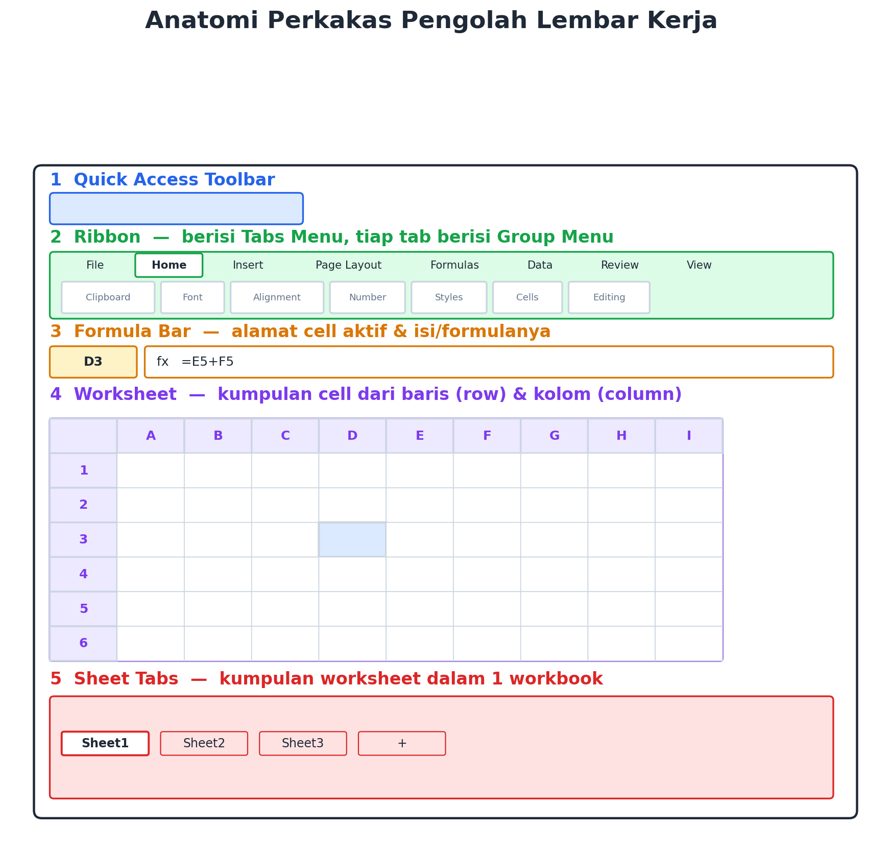
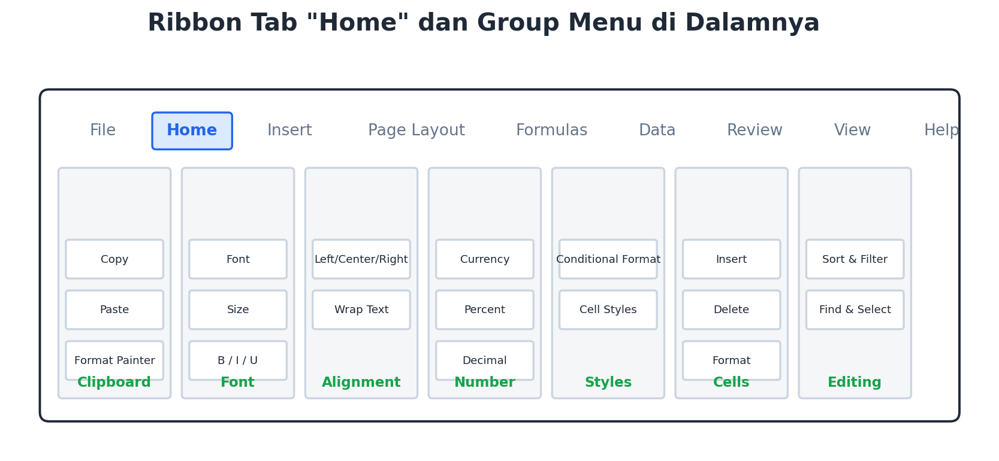
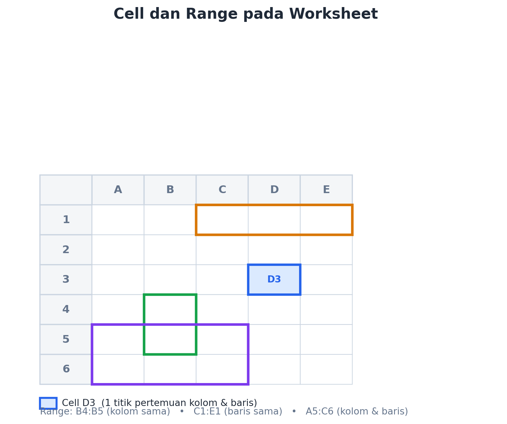
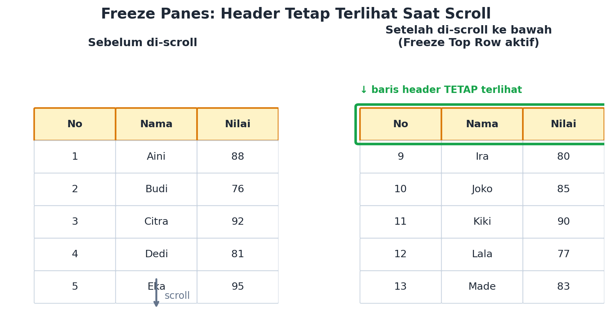
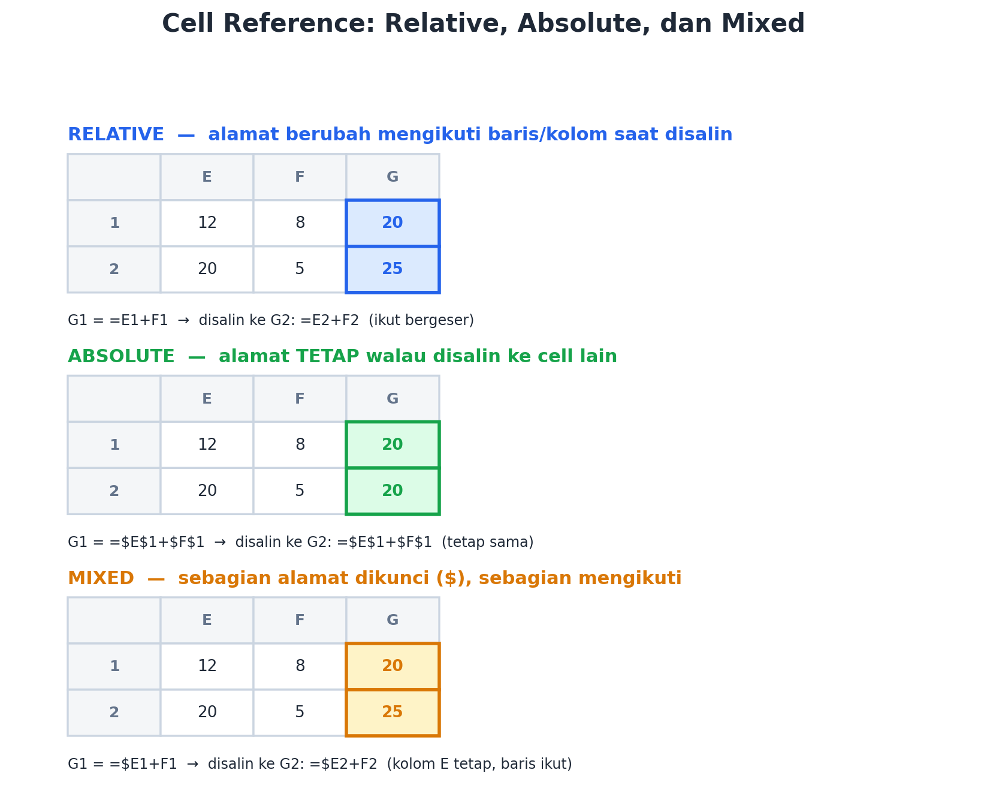
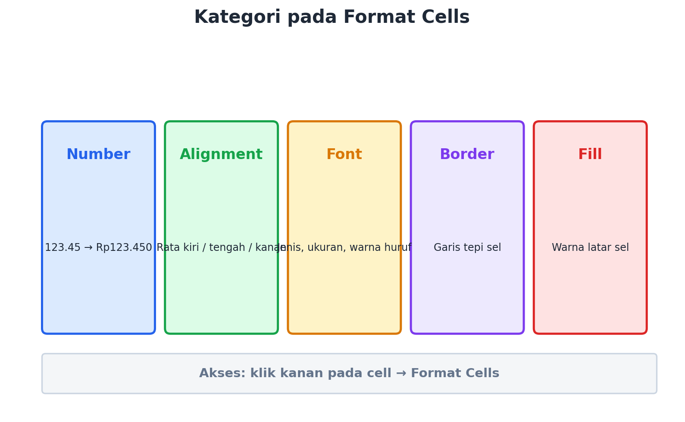

Coba deh, pernah nggak kamu lihat bendahara kelas ngitung uang kas, terus tiba-tiba total dan sisa uangnya langsung muncul tanpa dihitung manual satu-satu? Atau guru BK yang merekap nilai satu angkatan, terus dalam hitungan detik langsung tahu siapa yang nilainya paling tinggi? Nah, di balik itu semua, biasanya ada satu alat andalan: aplikasi lembar kerja alias spreadsheet — contohnya Microsoft Excel atau Google Sheets.
Di bab ini, kita nggak akan langsung belajar rumus-rumus rumit dulu, ya. Fokus kita sekarang adalah kenalan dulu sama “rumah”-nya: apa saja sih bagian-bagian dari aplikasi lembar kerja itu, dan apa fungsinya masing-masing? Soalnya, sebelum jago masak, kita harus kenal dulu dapurnya, kan? 😄
1. Apa Itu Lembar Kerja Pengolah Data?
Lembar kerja pengolah data (worksheet) adalah halaman digital berbentuk kotak-kotak (grid) yang dipakai untuk memasukkan, menyusun, dan mengolah data — mulai dari angka, tanggal, sampai teks. Aplikasi yang menyediakan lembar kerja ini disebut aplikasi pengolah lembar kerja, contohnya:
Ketiganya beda “merek”, tapi konsep dan fungsi dasarnya mirip banget. Jadi kalau kamu sudah paham salah satunya, pindah ke yang lain juga nggak akan bingung-bingung amat.
2. Kenalan sama Anatomi Lembar Kerja
Waktu kamu buka aplikasi lembar kerja dan pilih “Blank Workbook”, kamu akan lihat layar seperti gambar di bawah ini. Yuk kita bedah satu-satu!

① Quick Access Toolbar
Ini semacam “rak sepatu dekat pintu” — isinya tombol-tombol yang paling sering kamu pakai, misalnya Save, Undo, dan Redo. Letaknya di pojok kiri atas, biar gampang dijangkau.
② Ribbon
Ribbon itu semacam “lemari besar” yang isinya banyak menu, dikelompokkan dalam Tabs Menu (File, Home, Insert, Page Layout, Formulas, Data, Review, View, Help). Setiap tab punya Group Menu di dalamnya — misalnya tab Home berisi Clipboard, Font, Alignment, Number, Styles, Cells, dan Editing. Kalau kamu menambahkan objek tertentu (misalnya gambar atau grafik), akan muncul tab tambahan khusus yang disebut Contextual Tabs.

③ Formula Bar
Ini kayak “papan pengumuman” yang menunjukkan alamat cell yang sedang aktif, plus isi atau rumus (formula) yang ada di dalamnya. Ingat: setiap rumus di lembar kerja SELALU dimulai dengan tanda sama dengan (=). Contoh: =E5+F5.
④ Worksheet
Ini area kerja utamanya — kumpulan kotak-kotak kecil (cell) yang tersusun dari baris (row) dan kolom (column).
⑤ Sheet Tabs
Satu file (workbook) bisa punya banyak halaman (worksheet) sekaligus, mirip satu buku tulis dengan banyak halaman. Sheet Tabs ini yang menunjukkan halaman mana yang lagi kamu buka.
3. Cell dan Range: “Alamat Rumah” Data
Cell adalah satu kotak yang terbentuk dari pertemuan satu baris dan satu kolom. Alamatnya ditulis dengan kolom dulu, baru baris — misalnya D3 artinya kolom D, baris 3.
Kalau kamu gabungkan beberapa cell sekaligus, itu namanya range. Range ditulis dengan tanda titik dua (:) di antara cell awal dan cell akhir.

B4:B5→ sekumpulan cell dari kolom yang samaC1:E1→ sekumpulan cell dari baris yang samaA5:C6→ sekumpulan cell dari kolom dan baris tertentu (bentuk kotak)
4. Ngutak-atik Worksheet
Beberapa hal dasar yang bisa kamu lakukan ke worksheet:
- Select — klik nama sheet untuk memilih/mengaktifkannya.
- Rename — klik kanan pada tab sheet lalu pilih Rename, atau cukup klik dua kali pada nama sheet.
- Insert — klik tanda (+) di sebelah sheet paling kanan untuk menambah sheet baru.
- Move — klik dan tahan pada tab sheet, lalu geser ke posisi yang kamu inginkan.
5. Freeze Panes: Biar Header-nya Nggak “Kabur”
Bayangkan kamu punya data 100 baris. Waktu kamu scroll ke bawah buat lihat data paling bawah, judul kolom di baris paling atas ikut ilang — jadi bingung, kan, kolom mana isinya apa? Nah, di sinilah Freeze Panes berguna: fitur ini mengunci baris atau kolom tertentu supaya tetap terlihat walaupun kamu scroll ke mana pun.

Caranya: buka tab View, lalu klik Freeze Panes. Ada tiga pilihan:
- Freeze Top Row — mengunci baris paling atas (baris 1) saja.
- Freeze First Column — mengunci kolom pertama (kolom A) saja.
- Freeze Panes — mengunci baris dan/atau kolom tertentu sesuai posisi cell yang kamu pilih.
Kalau mau lepas kuncinya, tinggal pilih Unfreeze Panes yang muncul di menu yang sama.
6. Cell Reference: Relative, Absolute, dan Mixed
Ini salah satu “trik sakti” di lembar kerja. Waktu kamu bikin rumus lalu menyalinnya (copy-paste) ke cell lain, alamat cell di dalam rumus itu bisa berubah atau tetap — tergantung jenis referensinya. Yuk bandingkan:

Relative — “ikut pindah”
Ini jenis referensi paling standar. Kalau rumus =E1+F1 di cell G1 kamu salin ke G2, otomatis berubah jadi =E2+F2 — alamatnya ikut geser sesuai posisi barunya. Cocok dipakai kalau kamu mau rumus yang sama diterapkan ke banyak baris/kolom.
Absolute — “keukeuh di tempat”
Kalau kamu kunci alamatnya pakai tanda dolar ($) di depan kolom dan barisnya (misalnya $E$1), rumus itu nggak akan berubah sama sekali walau disalin ke cell mana pun. Berguna kalau kamu mau semua rumus “nunjuk” ke satu cell yang sama, misalnya nilai kurs atau diskon tetap.
Mixed — “setengah dikunci, setengah bebas”
Kamu bisa kunci salah satu saja — kolomnya saja ($E1) atau barisnya saja (E$1). Bagian yang dikunci nggak berubah, bagian yang nggak dikunci tetap ikut geser.
F4 di keyboard (pada beberapa aplikasi) setelah klik alamat cell untuk gonta-ganti jenis referensi dengan cepat.7. Format Cells: Biar Data Makin Enak Dilihat
Format Cells dipakai buat mengatur tampilan cell TANPA mengubah nilai aslinya. Caranya gampang: klik kanan pada cell yang mau diatur, lalu pilih Format Cells. Ada lima kategori utama yang paling sering dipakai:

- Number — mengatur tampilan angka (jumlah digit desimal, pemisah ribuan, mata uang, dll).
- Alignment — mengatur perataan teks (kiri, tengah, kanan) dan pengaturan wrap text.
- Font — mengatur jenis huruf, ukuran, warna, dan gaya (bold, italic, dst).
- Border — mengatur garis tepi cell, termasuk gaya garis dan warnanya.
- Fill — mengatur warna latar belakang cell.
Rangkuman
- Lembar kerja tersusun dari Quick Access Toolbar, Ribbon, Formula Bar, area Worksheet, dan Sheet Tabs.
- Cell adalah satu kotak (kolom + baris); kumpulan cell disebut range.
- Freeze Panes mengunci baris/kolom tertentu supaya tetap terlihat saat scroll.
- Cell reference ada tiga jenis: relative (ikut geser), absolute (tetap, pakai $), dan mixed (sebagian dikunci).
- Format Cells dipakai untuk mengatur tampilan data: Number, Alignment, Font, Border, dan Fill.
Nah, sekarang kamu sudah kenal “dapur” aplikasi lembar kerja. Di pertemuan berikutnya, kita akan mulai masak beneran — belajar rumus-rumus seperti SUM, COUNT, dan fungsi lainnya buat mengolah data sungguhan. Sampai jumpa! 👋
Uji Pemahaman
Coba jawab 5 pertanyaan singkat ini untuk mengecek pemahamanmu. Klik salah satu pilihan!